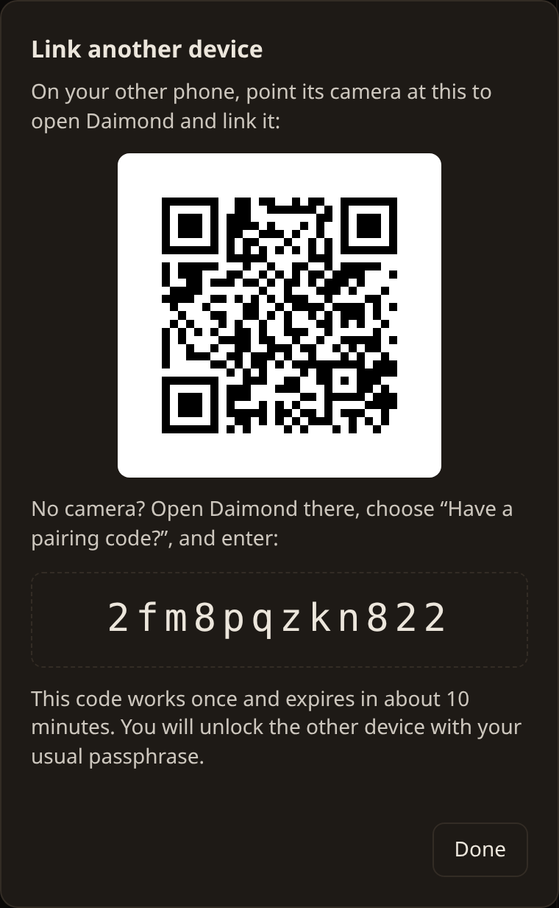
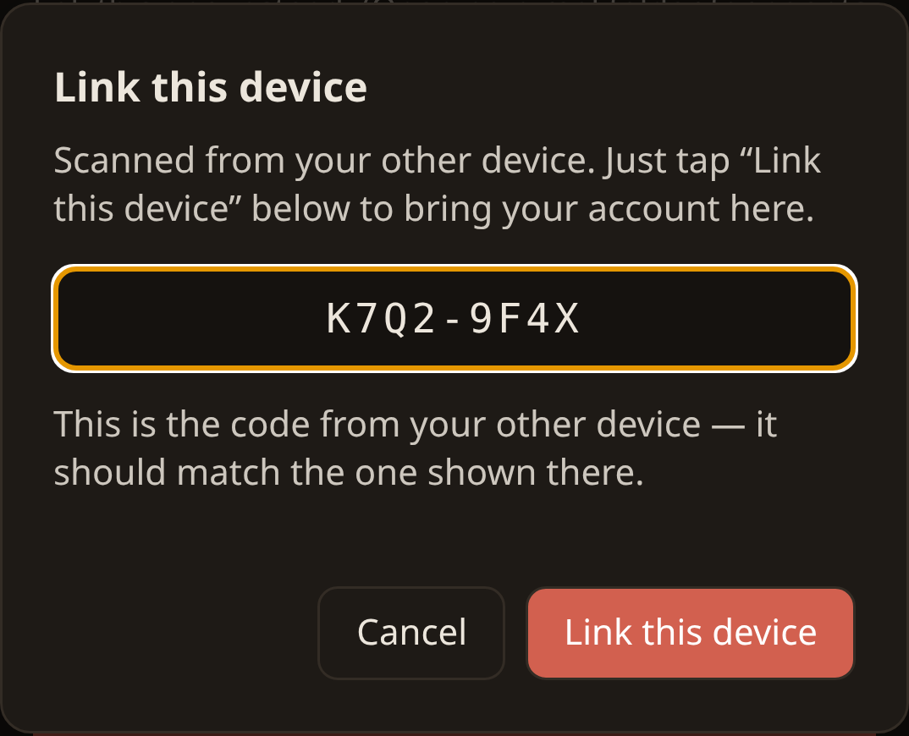

Cross-device sync
Daimond is local-first, so a second device starts empty. Cross-device sync carries your chats and workspace files between your own devices without the server ever reading them.
What travels through the gateway is one encrypted parcel that only your devices hold the key to. The key comes from your passphrase and never leaves the browser, so the server stores the parcel but cannot open it. Nothing readable crosses between devices.
Linking a second device
Each device makes its own identity, so typing your passphrase on a new device would start a separate, empty account — not bring your existing one across. To use the account you already have, you link the new device to it. It takes three steps.
-
On the device you already use, open the link dialog
Click the Link another device button in the top bar. It shows a QR code and a one-time pairing code.

Your first device shows a QR and a code. -
On the new device, scan the QR — or type the code
Point the new phone's camera at the QR code: it opens Daimond and fills the code in for you, so you only tap Link this device. No camera? Open Daimond there, choose Have a pairing code?, and type the code. The code shown is only so you can check it matches the first device.

After scanning, just tap Link this device. -
Unlock with the same passphrase
The new device now holds your account. Unlock it with the same passphrase you use on your first device — not a new one — and your chats and files appear. A passkey can unlock it faster afterwards, once you add one there.
What travels
Any file travels, whatever kind it is. A photograph, a recording, a PDF or a spreadsheet reaches your other devices as text does, up to a gigabyte for one file.
What syncs is also what is kept in cloud storage, so a workspace can be larger than the device you are reading it on. A file that is not on this device at the moment still shows in the tree, marked with a cloud, and comes down when you ask for it. The Workspace sets out the three states a file can be in, how space is freed as the browser fills, and what cloud storage costs.
What it costs
Cross-device sync is part of Pro, the one-time unlock — not a subscription, so it stays bought once like the rest of Daimond. Without Pro a device works on its own; with it, your devices stay in step. Pro also turns on cloud storage and Email. The larger file bodies that sync carries are kept in cloud storage, paid for from credits rather than by subscription, with a free allowance before anything is metered.